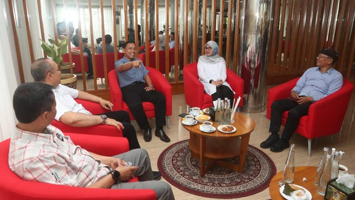

Taman Wisata Alam Kawah Ijen sempat ditutup untuk wisatawan. Destinasi wisata di Banyuwangi itu dibuka lagi mulai hari ini, namun ada syarat masuknya. Kawaj Ijen kembali menyambut wisatawan mulai hari ini, Sabtu (6/1/2024) dengan sejumlah persyaratan. Salah satunya pengunjung harus menunjukkan surat sehat. Ini merupakan salah satu hasil dari rapat koordinasi rencana pembukaan jalur pendakian TWA Kawah Ijen di Paltuding, Jumat (5/1). Berdasarkan hasil evaluasi kegiatan kunjungan wisata alam dan rapat koordinasi yang mengikutsertakan stakeholder terkait, kawasan TWA Kawah Ijen kembali dibuka untuk kegiatan wisata alam pendakian dan penelitian umum

.Wakil Gubernur Jatim Emil Elestianto Dardak mengajak warga Banyuwangi lebih gemar makan ikan tongkol dan ikan layang. Dengan makin banyaknya warga yang memakan kedua jenis ikan itu maka nilai jual kedua komoditas itu akan meningkat.Ajakan itu dia sampaikan dalam upaya meningkatkan harga jual ikan di kecamatan Muncar yang anjlok imbas panen ikan yang melimpah. Ikan jenis tongkol dan layang saat ini harganya anjlok mencapai Rp 4.000/kilogram."Sekarang saya ajak warga Banyuwangi ayo gemar makan ikan tongkol dan layang," ajak Emil Dardak di hadapan puluhan warga Banyuwangi,
Emil mengatakan salah satu upaya yang bisa mendorong peningkatan penjualan ikan adalah konsumen di level rumah tangga. Selain itu, kegemaran warga mengonsumsi ikan juga baik bagi upaya penurunan angka stunting. Dalam kesempatan itu, Emil juga mencicipi sejumlah masakan ikan tongkol yang disajikan warga setempat sebagai bagian dari lomba aneka kreasi ikan tongkol yang diikuti puluhan Ibu rumah tangga. "Baik juga ini untuk promosi produk olahan ikan di Muncar. Aneka kreasi yang kreatif dan lezat," ucap Emil di hadapan peserta lomba. Sebagai bagian dari upaya meningkatkan nilai jual ikan di Banyuwangi, masyarakat diberi edukasi untuk membuat aneka olahan ikan tongkol dan layung yang bisa dipasarkan dalam bentuk siap saji.
.Kepala Bidang Pengolahan dan Pemasaran Produk Kelautan dan Perikanan, Dinas Kelautan dan Perikanan Provinsi Jatim Awalrush Andira mengatakan bahwa Pemprov Jatim telah melakukan berbagai upaya agar ada jalan keluar atas anjloknya harga ikan tongkol dan layang. Beberapa upaya yang telah dilakukan Pemprov Jatim itu adalah pelatihan pengolahan produk perikanan, peningkatan produksi produk bahan ikan, hingga membuka pasar ekspor. "Konsumsi ikan bisa ditingkatkan dari perusahaan tepung ikan, pengalengan, dan kami akan menjajaki peluang ekspor lewat BUMN PT Perindo," kata Andira.
Banyuwangi - Pemkab Banyuwangi menggandeng TNI AU untuk pengembangan aerowisata. Bupati Ipuk Fiestiandani menyebut kerjasama berawal dari kolaborasi prajurit TNI AU yakni Semarak Dirgantara dan atraksi kolosal Gandrung Sewu 2023. "Kesuksesan kolaborasi atraksi udara prajurit TNI AU dan atraksi kolosal Gandrung Sewu 2023, tidak hanya meninggalkan kesan yang menawan namun juga jejak yang baik bagi Banyuwangi. TNI AU akan mendorong berbagai event aerosport untuk dikembangkan di sini (Banyuwangi-red)," kata Bupati Ipuk Fiestiandani, Minggu (7/1/2024). Ipuk menjelaskan Asisten Potensi Dirgantara (Aspotdirga) Kepala Staf Angkatan Udara (KASAU) Marsekal Muda TNI Andi Wijaya telah berkunjung ke Banyuwangi dan bertemu dirinya, Sabtu (6/1/2024). Dalam kesempatan itu disampaikan, TNI AU sangat terkesan dengan kolaborasi Gandrung Sewa dan TNI AU yang disambung dengan parade dirgantara di Banyuwangi..